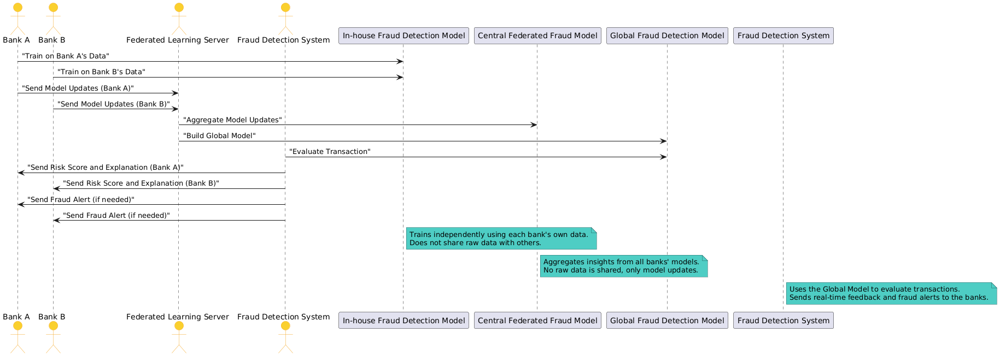

Real-Time Fraud Detection API
System Overview Diagram
Detailed Explanation of the Diagram:
Actors:
- Bank: Each bank in the system that trains its own fraud detection model based on its transaction data.
- Federated Learning Server: Central server that aggregates the model updates from different banks to build a stronger, global fraud detection model.
- Fraud Detection System: The system that uses the global model to evaluate transactions in real time and provide fraud risk scores.
Flow of Operations:
- Local Model Training: Each bank trains its own local fraud detection model using its transaction data. This model learns to identify fraudulent patterns specific to that bank.
- Model Updates: After training, the bank sends model updates (not raw transaction data) to the Federated Learning Server. This ensures that sensitive data remains secure.
- Aggregation: The Federated Learning Server aggregates the model updates from all participating banks to create a stronger Global Fraud Detection Model. This model benefits from the collective knowledge of all banks without compromising individual data privacy.
- Real-Time Evaluation: The Fraud Detection System uses the Global Model to evaluate transactions in real time. It assigns a risk score to each transaction based on the learned patterns.
- Feedback Loop: If a transaction is flagged as potentially fraudulent, the system sends the risk score and an explanation back to the respective bank. If necessary, it can also alert the bank about the transaction.
Key Notes:
- The Global Fraud Detection Model aggregates insights from all participating banks without sharing sensitive transaction data.
- The Fraud Detection System provides real-time feedback and explanations for flagged transactions, allowing banks to take immediate action.
- This architecture promotes collaboration among banks while ensuring data privacy and security.
Detailed Transaction Flow with All Layers:
Bank Initiates Transaction
A transaction is initiated by the bank’s system (e.g., ATM withdrawal, online purchase).
Details include:
- Account ID
- Transaction Amount
- Location
- Timestamp
- Device Details
The data is encrypted before leaving the bank’s environment for security.
Encryption Layer
Ensures that sensitive transaction details are protected during transit.
Uses protocols like TLS for transmission and additional payload encryption (e.g., AES).
API Gateway
Validates the request format and forwards it to the message broker.
Ensures authentication and rate-limiting to handle multiple incoming requests.
Kafka Message Broker
Distributes transactions to various processing components for scalability.
Organizes transactions into topics based on type (e.g., "debit," "credit").
Guarantees delivery and fault tolerance.
In-House Fraud Detection Model
Each bank has its own local machine learning model trained on its private data.
The in-house model performs a preliminary analysis:
- Assigns a local risk score.
- Flags suspicious patterns based on the bank's historical data and rules.
Results are sent to the central federated model for further refinement.
Central Federated Learning Model
Aggregates risk score updates from multiple banks without accessing raw data.
The global model detects patterns and anomalies across multiple banks.
Generates an improved risk score based on:
- Patterns seen across institutions.
- Global fraud trends (e.g., bot attacks, compromised devices).
The global model sends the combined result back to the in-house layer.
Post-Processing Layer
Combines results from the central and in-house models.
Generates:
- A final fraud score.
- An explanation for the decision (e.g., “Unusual IP address,” “High amount for this user”).
Flags the transaction for manual review if the fraud score exceeds a threshold.
Response to Bank
The processed result is sent back to the bank via the API Gateway.
The response includes:
- Fraud Score
- Action Recommendation (e.g., "Approve," "Decline," or "Investigate").
- Reason (e.g., "Transaction from an unregistered device").